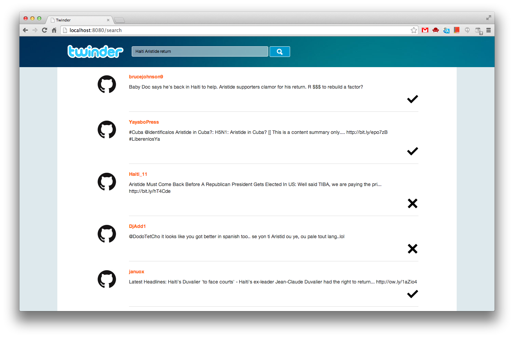

This site provides supplemental material and information about my PhD thesis entitled "Social Web Data Analytics: Relevancy, Redundancy, Diversity". I have defended this thesis, which was written when I had been working in Web Information Systems group, Delft University of Technology, the Netherlands. My thesis is supervised by prof. dr. ir. Geert-Jan Houben.
The works in this thesis have been published in different venues relevant to the research area of information systems. The detailed list can be found at my homepage.
In the past decade, Social Web has evolved to both an essential channel for people to exchange with friends and a new type of mass media. The immense amount of data with appropriate methodologies prompt new possibilities to reveal the patterns behind such digital activities. The emerging study of data science, along with its cases in both research and application, has shown the value of analytics to the science and business.
In this thesis, we report the results of our research on Social Web data analytics by proposing a systematic solution with the answers to multiple general problems in the context of information retrieval on Twitter as well as a real-life application. We introduce a Social Web data analytic platform, which is aiming at providing data scientists with a tool to conduct their analytic tasks. By studying the instruments applied in analytic tasks with Twitter data, we propose the Twitter Analysis Language and implement corresponding functional components in our analytic platform.
Taken search on Twitter as a general case for research, we bring forward the question that, how can we better understand the meaning of information needs from users and hence fulfill them with more suitable results? In particular, we aim to achieve higher relevancy, less redundancy, and with deeper understanding on diversity. With hypotheses made after studying sample search results, we make use of machine learning algorithms in order to validate them with standard, representative dataset. Extensive evaluation results show that our findings improve the retrieval effectiveness significantly. Finally, we put these analytic results into practice and create a prototype search engine for Twitter, which is called Twinder, to demonstrate the applicability of these findings.
Inspired by real-life cases, we focus on the information need from public and semi-public sectors during emergency or potentially dangerous circumstances and provide information support using semantic-based faceted search powered by our analytic platform. The application and the evaluation results show the validity of our analytic platforms as well as the effectiveness of exploiting semantics to meet their requirement for intelligence.
You can download it via this link from the repository of Technische Universiteit Delft.
The public defence of my thesis was held on December 9th, 2014, at 10.00 a.m. in Senaatszaal, Aula Congrescentrum. The address is Mekelweg 5, 2628 CD Delft, the Netherlands (Google Maps). Before the defence at 09.30 a.m., I gave a brief presentation about my work. A reception was held directly after the defence.
We try our best to make the dataset that have been mentioned in the thesis publicly available for reproducing the results as well as enabling others to improve our methods.
| File Name | Description | Size | Link |
|---|---|---|---|
| ktao-phd-thesis-chap02-rss-news-feed.sql.gz | The SQL dump (MySQL 5) of the table that includes 62 RSS news feeds. | 2 KB | Download from Dropbox |
| ktao-phd-thesis-chap02-news-articles.sql.gz | The SQL dump (MySQL 5) of the table that stores the news articles retrieved by monitoring the RSS news feeds. | 75.6 MB | Download from Dropbox |
In order to put our research into practice, we present two demonstrations that is supported by Twitter Analytic Platfrom, which is instroduced in this thesis.
Given the motivation of fulfilling the information needs of users with Social Web data, we make use of our platform to investigate several fundamental problems in the context of information retrieval on Twitter. Therefore, we present Twinder (Twitter Finder), which is a search engine for Twitter streams. By applying the standard query likelihood based language modeling setup, we started from a prototype system that can retrieve tweets with keyword queries. Increasingly, we put our findings, which have been concluded from studying the problems of relevance estimation (Chapter 3), near-duplicate detection (Chapter 4), and search result diversification (Chapter 5), into practice so that the retrieval effectiveness of Twinder gets improved in terms of the corresponding measures. A screenshot of Twinder is shown below. The running demonstration will be setup up soon.

Twitcident.org is a collaboration of Delft University of Technology, Netherlands Organisation for Applied Scientific Research TNO and CrowdSense that aims to support public safety with Web mining technology. In Delft, we focus on the core technologies that enable Twitcident to deliver the results of good quality. In particular, Twitter Analytic Platform provides the toolkits that Twitcident can rely on for conducting Social Web data analytics in Twitter Analysis Language. The outcomes can be further rendered for various applications, e.g., faceted search and visualization. A demonstration can be found at http://wis.ewi.tudelft.nl/twitcident/.
Ke Tao
http://ktao.nl